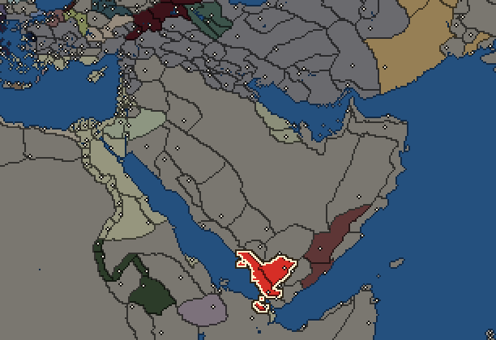
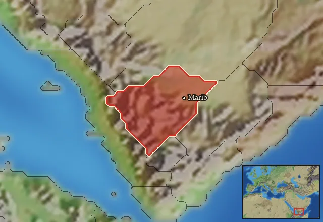

RTR: Imperium Surrectum
RTR: Imperium SurrectumSaba


- difficulty Difficult
- Arab culture
- believes
 Arab
Arab - 3 settlements
- capital Marib
- 13,000 manpower
- 2 characters
- 20 faction units
- 432 regional units
The campaign brief
"Mariaba, the capital of the Sabaians, is situated upon a mountain, well wooded. [...]
The people cultivate the ground, or follow the trade of dealing in aromatics, both the indigenous sort and those brought from Aithiopia; in order to procure them, they sail through the straits in vessels covered with skins. There is such an abundance of these aromatics, that cinnamon, cassia, and other spices are used by them instead of sticks and firewood.
[...] The Sabaians [...] have become the richest of all the tribes, and possess a great quantity of wrought articles in gold and silver, as couches, tripods, basins, drinking-vessels, to which we must add the costly magnificence of their houses; for the doors, walls, and roofs are variegated with inlaid ivory, gold, silver, and precious stones.
This is the account of Artemidorus. The rest of the description is partly similar to that of Eratosthenes, and partly derived from other historians." – Strabo 16.4.19.
Dearest Malik, your accession to the throne comes at such a time of sorrow and pain. This humble servant does not wish to speak ill of the dead, especially not those who were Malikay Shaba’ before you, great Malik, but the truth of your realm is evident. What the great Karib’l Watar bin Ddamar’liy had accomplished, all the peoples he brought to the yoke, all the kingdoms he broke, all the lands he obtained, all the riches he gathered, all is gone; all his works have fallen apart. Old enemies have arisen once more, and grown at the expense of your and your father’s realm. Only a century ago, our slaves the Ma’in, the Qataban, and Khaddramawt knelt at the feet of your ancestors; now they seek to conquer these very halls you walk on. Now we are surrounded by enemies on all sides, seeking to destroy your great kingdom.
The Lord of ‘Awam will not let them, however, not with you as his vessel on earth, Malik. ‘Lmaqah is a great god, and we, as his children, take on his great strength, and will vanquish our enemies as we have done before, as Karib’l Watar did so many years ago. Already now our former servants fight amongst themselves, the spawn of ‘Am are taking over the lands of the spawn of Wad to our north. Soon, the last vestiges of their alliance will crumble like that of a pack of dogs finding a magnificent beast in a moment of weakness. We must be cautious and wise but also decisive when we strike back, and put these rebels in their rightful place.
The last hundred years have truly been a dark time for the sons of ‘Lmaqah. The sons of Wa’rin Khiyawt, great ally of Karib’il Watar from across the strait have become no more. Our lands across the strait have been much reduced to help our pious struggle against our former slaves, but by the grace of the gods, we maintain one market outpost yet. Our enemies have taken away the greater part of our trade for themselves, and have tried to leave us nothing, bypassing the routes of our merchants with their own, but the wars raging amongst them provide a great opportunity for us! We are the sole masters of the strait closing off the great ocean; we would do well not to neglect it. Someone must be left to trade the spice and perfume. The many peoples of the west and north are ravenous for it, like a village that needs the water of a river, and it is us who are rightfully their providers, not some spawn of Wad or ‘Am. It is time to take back our riches and our lands, so terribly plundered from their rightful masters, for an unbearable amount of time!
When they permitted you to mount your father’s throne, it was only on the assurance that you would keep spice and perfume flowing, and I am certain you will, great Malik; but first you must squeeze. ‘Lmaqah bless you; may he bless us his children all in these trying times.
Starting settlements
Saba begins with 3 settlements and 13,000 manpower.
| Settlement | Region | Size | Manpower | Already built | Settlement | Region | Size | Manpower | Already built |
|---|---|---|---|---|---|---|---|---|---|
| Marib (capital) | Sabaia | large town | 5,500 | 10 buildings | Sabai | Sabaike Aithiopia | large town | 5,500 | 10 buildings |
| Sakatia | Elisaria | town | 2,000 | 6 buildings |
What is already built in each settlement
Marib, in Sabaia: Small Treasury, Governor's Villa, Wooden Palisade, Homeland, Region Information Scroll, Roads, Local Barter, Irrigation Ditches (Crops), Basic Armoury, Cisterns (Sanitation)
Sabai, in Sabaike Aithiopia: Small Treasury, Governor's Villa, Wooden Palisade, Homeland, Region Information Scroll, Roads, Local Barter, Irrigation Ditches (Crops), Basic Armoury, Cisterns (Sanitation)
Sakatia, in Elisaria: Governor's House, Indirect Rule, Region Information Scroll, Local Barter, Nomad Communal Herding (Husbandry), Trade Port
Starting diplomacy
Saba begins the campaign with no allies, no trade agreements and no wars.
Like every faction, it is also at war with the  Free Peoples, who hold every settlement no faction does.
Free Peoples, who hold every settlement no faction does.
Reforms
Open to every faction: Military innovations have arrived!, Second wave of military innovations have arrived!.
Units you can recruit
The same as in the main campaign.
Homeland
Saba's homeland is 1 region. Only there can it install the Homeland government (more on homelands).

Starting characters
| Name | Role | Age | Name | Role | Age | ||||||
|---|---|---|---|---|---|---|---|---|---|---|---|
| Zamir Ali Zarih | General | 50 | Nasha Karab Yuha'man | General | 29 |